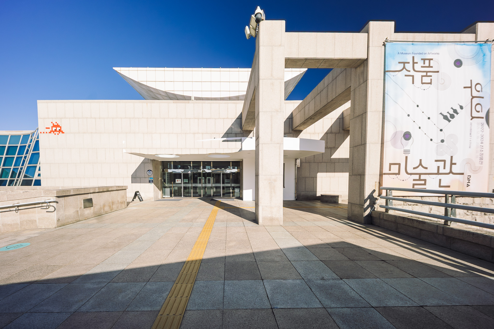
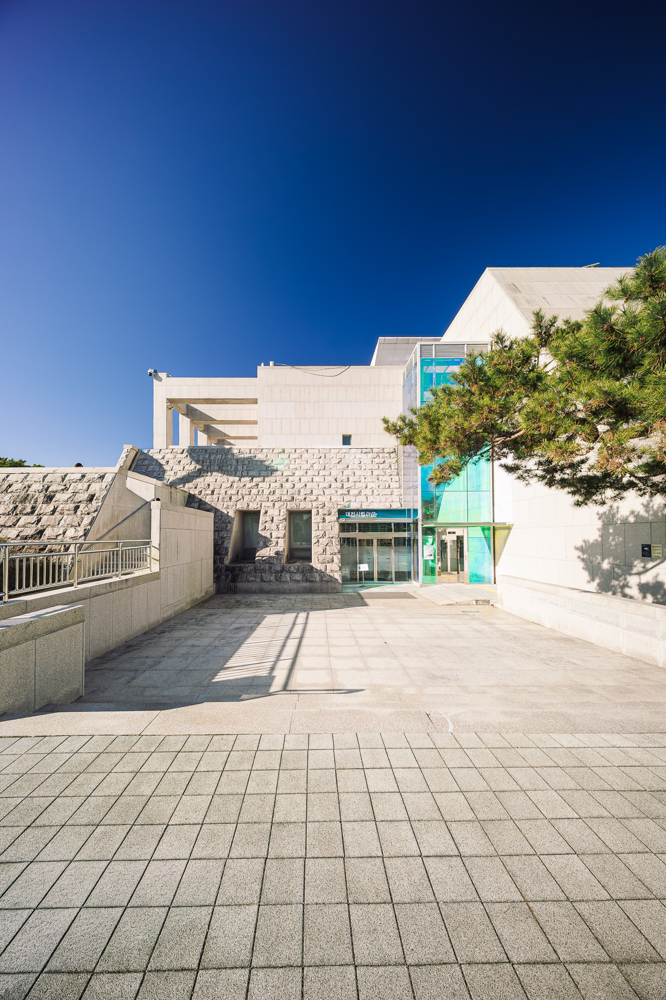

버스 출발 06번·주차장 출발 04번은 경사로 위쪽 문이에요. 계단 옆 아래층 문은 다른 입구입니다. 같은 건물 안에서도 어느 문인지 먼저 구분하고 문 앞 바닥을 살펴봐요.

입구 사진의 155번 주소 표지와 둥근 차양을 찾아요. 노란 점자블록이 문 앞에서 꺾이는 곳과 바닥 이음새를 확대해요.
렉터스 LECTUS · 건축 답사 사진 · 2026.03.10 게시 · 촬영일 미확인

계단 옆 아래층 문과 푸른 유리 구조물 앞 바닥을 살펴봐요. 위쪽 경사로 끝 문과 다른 입구예요. 어느 문으로 들어갈지 표지를 비교하고, 승강기 위치·연결은 공식 안내와 따로 확인해요.
한국관광공사는 미술관의 경사로 접근·자동문·승강기를 안내합니다. 이 안내가 사진 속 특정 문이나 현재 승강기 운행 상태를 확인해 주지는 않아요. 사진에 가려진 길·정류장에서 여기까지의 연결은 별도로 확인해야 합니다.